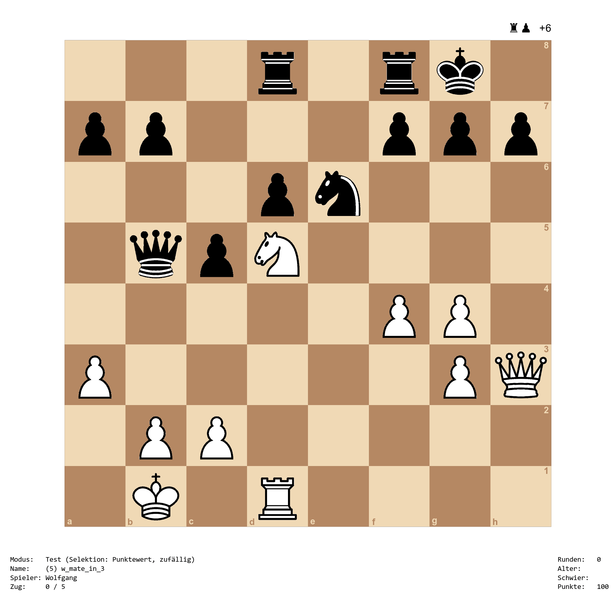

The purpose of the chesstrainer package is to create sequences of moves (lines), save them, and then test yourself on these sequences. This is especially useful for training openings, but can also be used for creating chess puzzles or training tactics. Can you find the forced mate below?

The development version of the chesstrainer package can be installed with:
install.packages("remotes")
remotes::install_github("wviechtb/chesstrainer")To start playing, first load the package with library(chesstrainer) and then type: play(). For an introduction, type: help(chesstrainer) or you can read the documentation online here.
If you are not an R user, but still would like to use the trainer, you will first have to install R, which is freely available from here. Once R is installed, start up R and then enter the commands above for installing the package after the prompt (>) on the ‘R Console’. If you receive a prompt whether to use/create a personal library, answer ‘Yes’. If you are asked for a download location, you can select the first choice. Once the package is installed, type library(chesstrainer) to load the package and play() to start the trainer.
The chesstrainer package is licensed under the GNU General Public License Version 3. To report any issues or bugs, please go here.